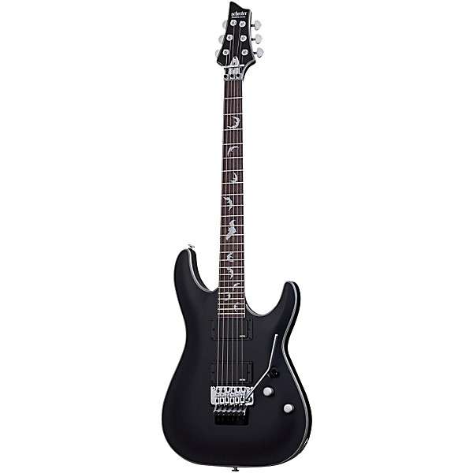
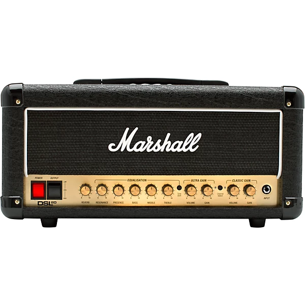
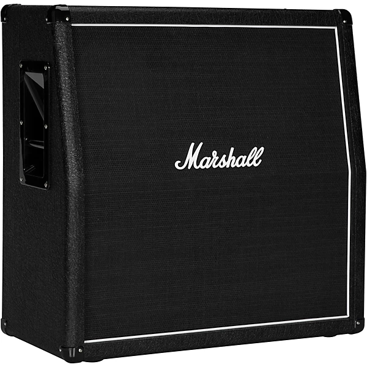
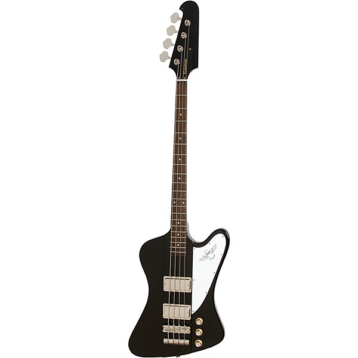
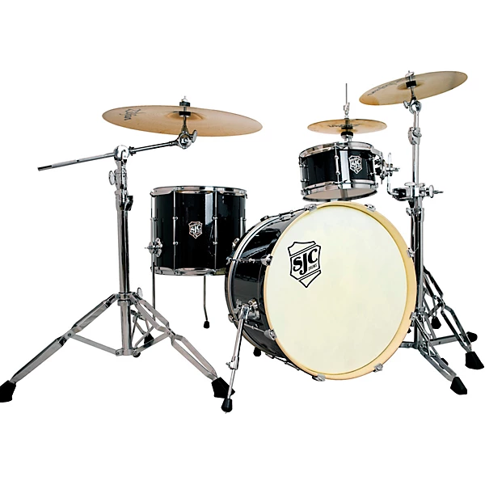

Our Gear!
Click the image of the gear to buy!
|  | The Schecter Platinum guitar is used by our guitarist. It plays fantasitc and we highly recommend it! |
|---|---|
|  | This is the stack amp we use for the guitar. It has great sound and effects especially the distortion. |
|  | The Cabinet speaker offers clear sound and no audio clipping Great for loud music! |
|  | Our bassist uses Epiphone Thunderbird. A larger bass that offers larger sound. |
|  | SJC drums are the weapon of choice for our drummer They are a fantastic set built to last. |